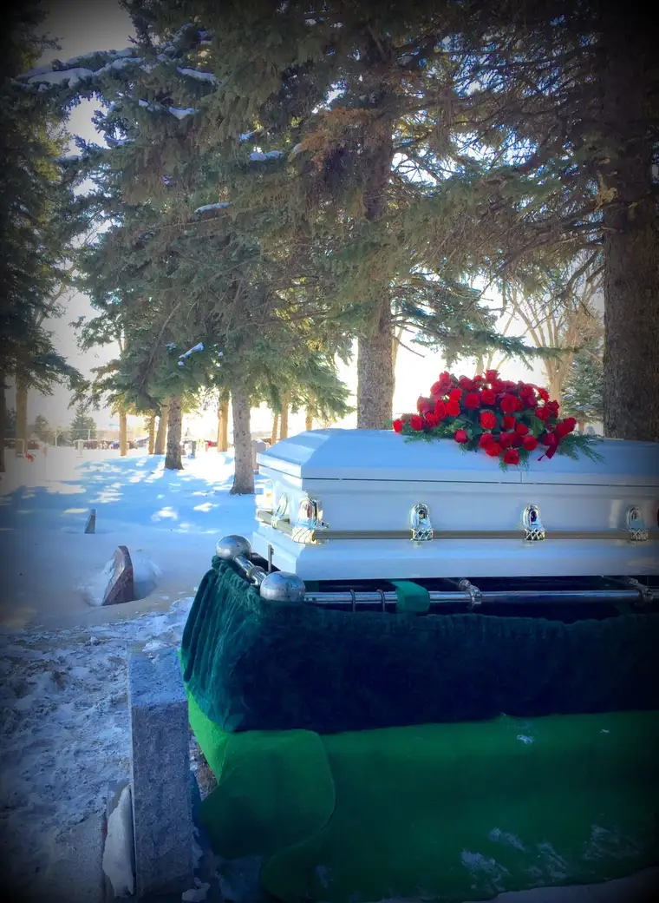
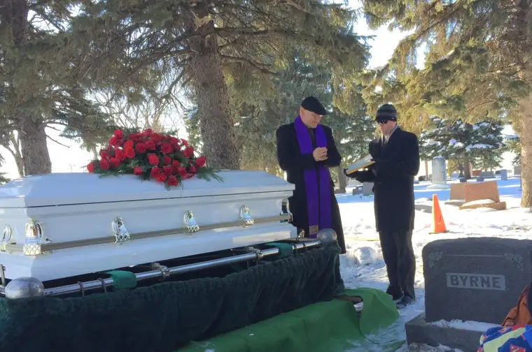
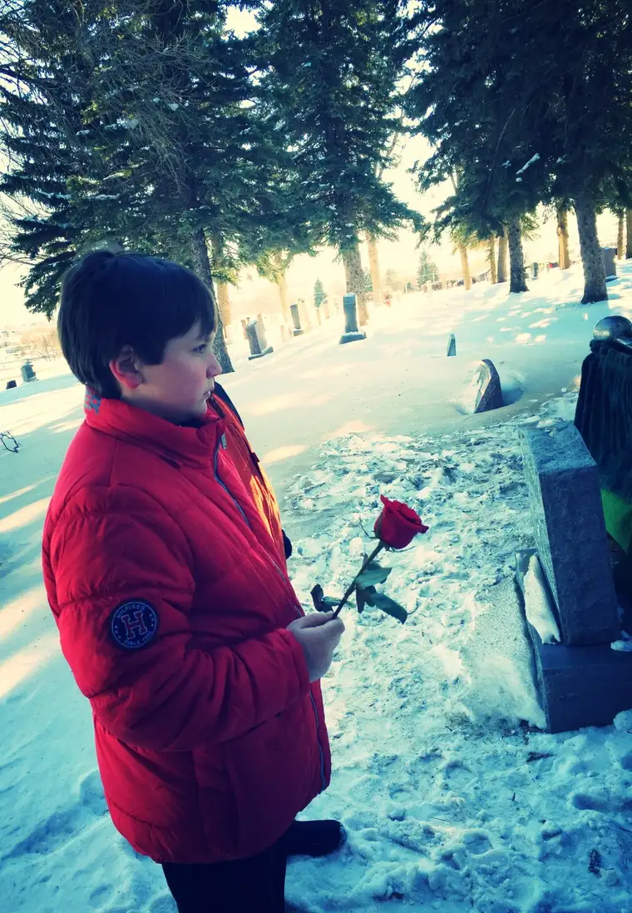

It was my youngest son’s teacher who reminded me of it.
I’d shared with her in an email what my son had been up to during break; how his Christmas vacation turned out a little different than we’d planned. I told her about how my grandmother had died on Dec. 28, and how my youngest two sons were with me in Bismarck for an extended stay the night my Mom called with the sad news that Grandma had left us, and how we’d scurried off at midnight to meet Mom and my other son, a few years older, at the nursing home so we could say goodbye. I told her how he and his brother were there for everything. While we planned Grandma’s funeral, they were in the other room within earshot, drinking Coke and playing hand-held gaming devices to pass time. They were there for the vigil, for the funeral, for the burial, for the family gatherings throughout, for all of it.
It had been quite a lot and I thought she ought to know, just in case there were any delayed reactions from our youngest.
“As odd as it sounds,” she wrote in an email back, “I believe that ‘Burying the Dead,’ is one of our most important works of mercy. It is important for children to join in this process, because I think it can help them to understand God’s plan and purpose for each of us, wherever we are, in His circle of life and death, sometimes needing help, sometimes giving help. What a weekend! Prayers for you and your family.”
She validated what I had been feeling about my sons’ involvement in the whole thing, and articulated it so very well. Her response blessed me.
But it also reminded me that there was something to this “Burying the Dead” thing that deserved pause. How is it that this always surprises me? To be reminded that buying the dead is one of the corporal works of mercy that, as Catholics and Christians, we are obligated to do in service of our fellow brothers and sisters in Christ?
The other corporal works of mercy, which all relate to tending to the bodily needs of others (as referenced in Matthew 25:34-40), and can affect our salvation, include feeding the hungry, giving drink to the thirsty, clothing the naked, sheltering the homeless, visiting the sick and visiting the imprisoned.
Burying the dead, which is so much on my mind right now, is referenced in Scripture, in the Book of Tobit: “In the days of Shalmaneser I had performed many charitable deeds for my kindred, members of my people. I would give my bread to the hungry and clothing to the naked. If I saw one of my people who had died and been thrown behind the wall of Nineveh, I used to bury him.”
And in a footnote where I found that here, it notes that “Tobit risked his own life to bury the dead. Deprivation of burial was viewed with horror by the Jews.” (References within link.)
This last line provides a clue, I think, to why I am surprised to be reminded of this corporal work of mercy. I tend to view corporal works of mercy as sacrificial acts, and yet to me, burying the dead is so much a given; it’s just something we do that ought to happen. And it doesn’t feel like much of a sacrifice to me at all.
I have gone to three funerals in the past week and a half. It started with the vigil service of Michelle Duppong, 31, sister of my friend Lisa who also died while I was in Bismarck and happened to belong to the same parish as my grandmother. Her vigil was a time to be there for my friend, but all the while we prayed for Michelle, God was preparing me for the phone call that would come just a few hours later, telling me my grandmother was gone.
I attended Michelle’s funeral the next day, and afterward, immediately set about helping my mother plan her mother’s funeral. Her sisters were in far-away places and would come as soon as they could, but we would get things started and involve them as much as possible by phone, text and email.
It was an intense time, and involved my sister and me preparing some of the music, which we would offer as a parting gift to Grandma — I on voice and her on flute. Yes, it was a little stressful sorting through all of this, but not much of a sacrifice. I wanted to do it for Grandma and our family, just like I wanted to be there for my friend Lisa.

The day I got home from Bismarck, still recovering from Grandma’s death and resulting events, I received a call from my friend Judy, who asked if I’d sing at her father’s funeral. As she shared with me about his unexpected death just hours before, my heart leapt out to her. I felt I could cry a river for both of us. I was tired still, and grieving myself, but of course I would sing. Of course. I knew her parents – I had talked to them several times at pancake breakfasts after Mass and seen them so often sitting in the pew during my times serving as cantor – and it would be an honor, truly, to be there for them in that way.
See, it just doesn’t seem like a sacrifice, and I think it’s because love is at the crux of it. But also, in our culture, it’s a given that we bury the dead.

To think of times and situations, even today, when a burial isn’t a given…it breaks my heart. It is for the living of course, more than anything, but we are also honoring the body. Because the body is the house of the soul during our earthly time, and it is precious. That is why it is hard for us to see the lid on the coffin go down. We are so human, and so bound to the body. It represents the person we love, and in our humanity, it is exceedingly difficult to let go of that.
So, we bury the dead, and grieve. Though it may not be easy, I don’t find it sacrificial. To me, it is an honor to be part of sending someone to heaven, whether through singing or just being there in the pew praying for the family. I am grateful for those chances.

And now, my sons have seen the process up close and personal, and it will stay with them forever. That is a gift all its own.

My youngest indicated the deliberation with which he is processing all of this. On the way to the nursing home that night, knowing what we’d be seeing there, he said, “Mom, it’s just so weird. We were just visiting Grandma today, and she was alive then. And now she’s not.” Yes, these are hard things to process, but they are life, and now he knows.
This will be something that stays with him; that and the prayers we prayed over her, and the blessing I placed on her forehead, and how my mom went in search of her favorite pink outfit for the burial, and how we walked out the door, still a bit in shock yet grateful somehow that we could be there, just as the ambulance was arriving…
It is hard, it is surreal, but it is not a burden, I find, to bury the dead. Giving love back for the love that has been offered is no sacrifice at all.
Soon, I will share more about this amazing woman I am privileged to call “Grandma.”